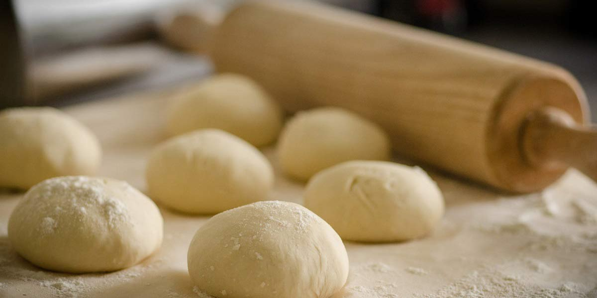

Soft White Rolls
Recipe Specification
Ingredients List
| Ingredients | Quantity |
|---|---|
| Strong White Flour | 430g |
| Dried Yeast | 15g |
| Whole Milk | 120ml |
| Medium Eggs | 2x1 |
| Vegetable Oil | 30ml |
| Caster Sugar | 30g |
| Table Salt | 1 tsp |
| Unsalted Butter | 15g |
Yield: 12 Rolls
Preparation
- Add 120ml of water and butter to saucepan and heat to 50’C before mixing in Yeast.
- Whisk milk, eggs, oil, sugar, salt and the water with yeast in it.
- Sift flour in bowl, create well and pour liquid into middle of well.
- Mix gradually until dough starts to come away from side
- Flour work surface and tip out dough before kneading for 8 minutes.
- Place dough in a oil bowl and clingfilm before leaving in a warm place to prove for 1 hour.
- Pre-heat oven to 185’C.
- Tip dough out on floured surface and roll into sausage shape.
- Divide dough into 12 equal pieces and individually roll into smooth balls
- Line deep baking dish with grease-proof paper and place dough balls an equal distance apart from each other.
Cooking Instructions
- Place bread tin in the oven for 15-18 minutes.
- Remove from the oven and place on a wire rack to cool.

Serving Suggestions
Bread can be enjoyed with soup or sliced to create a sandwich.
Storing instructions
Once cool, store in a bread bin. Bread should be consumed within 4 days as it will go stale there after.
Reheating Instructions
Suitable for toasting.